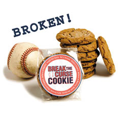

| Step up to the Plate Our real agenda: To propose that a cookie could break a curse, any curse, let alone this one, is a bit of a stretch. But it's not a totally crazy idea. This is a baseball thing after all. Here's something crazier and much bigger. Perhaps simple acts of kindness & generosity - performed in OVERWHELMING numbers - could make it happen. Yes, we are proposing that good-hearted people, acting together, can change the karma. At worst we'll make a positive difference in the daily life of New Englanders. Break a cookie and share it with a friend or stranger. Then do another random nice thing - perhaps for a New Yorker. Repeat often (with or without the cookie). Click here for a list of RNT's (Random Nice Thing) suggestions. Sharing a cookie or a smile is just a nice little thing, but a lot of nice little things can add up to a huge movement. That's what is called for. |
| Want Cookies? | |
|  | Individually
Wrapped 3" Molasses
Clove Cookies We donate a nickel from every cookie we sell to the Sweet Home Project's Kids Can Dream Fund. The Sweet Home Project funds programs to help homeless families move in to economically stable lives and homes of their own. The Kids Can Dream Fund sends homeless kids to baseball games and buys bats and gloves for homeless girls and boys. www.dancingdeer.com/sweethome |
Things to do with
cookies Cookie Breaking/Curse
Breaking Ritual This is how the Deers do it: To a bemused stranger, explain you are on a mission: creating Overwhelmingly Positive Karma (OPK) for noble purpose. We're talking baseball and beyond. Stats OPK (Overwhelmingly Positive Karma) KBI (Karma Batted In) Random Nice Thing
(RNT) Suggestions from Dancing Deer RNT (Randon Nice
Thing) Anecdotes from Red Sox Fans Here's the inbound list. Happy reading. We're all very curious ourselves. • When in a restaurant we noticed a young couple with two small
children. • My mother sent me two dozen of your Break the Curse cookies. Unfortunately, they are delicious. Way too good to share with anyone besides my children. So, one RNT for mom in Massachusetts although the scale will not thank me. Virginia L. Glen Rock NJ • After receiving my "Break the Curse" cookie...I didn't eat it, and instead, brought it home to my husband who couldn't attend the Opening Day game - and I let him have it. WE BOTH love the Molasses Clove Cookies - I mean LOVE them, therefore, you'll understand just how nice of a RNT this actually was. Catherine C., West Boylston, MA • Today I had to bring my dog, Sheba, to the vet's and when I got there it was packed and people said the wait was approx. 1 hour. Well, it came down to me and this other guy about an hour later...he had been there well before me (and a few others that were called before him)...then they called my name and instead of just going with the nurse, I told the nurse that this gentleman had been here for much longer than me, and when they checked, he had somehow gotten lost in the shuffle so I allowed him to go ahead of me. He was really grateful..... Karen L. • I give my mail man cookies! and I get the best mail service anyone can get! Sabrina M., Watertown, MA • I live a comfortable life and have access to great entertainment. I have tickets to all the Celtics games. Next weekend instead of going myself or taking frieinds, I'm giving them to some kids who never have that chance. I'm donating 4 tickets to each of three games to the Kids Can Dream Fund. Bob H., Cambridge, MA • I passed out a "Break the Curse" cookie to every student and teacher at the Wilbraham and Monson Blake Middle School this morning! Collectively, we are huge Red Sox fans, and I know that if positive thinking and the act of performing random nice things could win the World Series, our school would throw the winning pitch or score the winning run! Betsy T. Wilbraham, MA Red Sox Nation Cookie
Breaking Rituals Try one of these rituals yourself, maybe it will help. • All Tie playoff games going into the 9th inning are watched in my bathtub with my shower radio(fully dressed of course). Radio comes in about 6 seconds faster then the TV, which allows me to know when David Ortiz hits the walk off homerun before all of my clueless friends watching the TV. Keith R. • I'm pretty crazy when it comes to being superstitious. It all depends on where I am. Here is an example. If I'm at a bar and actual have a seat at the bar watching the game, it is crucial that I have the label on my beer bottle facing 2:00. The bottle must be placed on 1 cocktail napkin and I can never hold the beer while the pitcher is holding the ball. This is just one of many ridiculous habits I have. I started this one during the 7th inning of the Red Sox Yankees Game on Sunday July 27, 2003. The Red Sox came from behind and won the game. A also have to leave my living room and hang out in the kitchen of my Apartment in South Boston anytime Manny or David Ortiz (Dortz) are at the plate. I also watched the final drive of the 2001 Patriots Super Bowl victory on a 5 inch portable T.V. in my bathroom. Yeah....I've got it bad. Boston Fans Rule! Dave L. S. Boston, MA • To break the curse I take my cookies to the beach. I appeal to that deep tidal knowledge - that deep eternal understanding, embedded in nature itself, that what falls must eventually RISE. Right? Must. So I stand at the edge of the sea with my Break-the-Curse cookies (with 86 of them, to be exact), and I wait for that precise moment when THE TIDE TURNS, when it stops dropping and starts to come back up. (In truth, I don't wait long, on account of the tide charts available on the internet tell me precisely when this moment occurs. Happens twice a day, it turns out.) Then, as the waves again begin to stretch toward high water, I begin to feed the cookies to the sea. I throw them in. One at a time. Mostly overhand, sometimes side-arm (mimicking Pedro's new, unfortunately lower, arm slot), and from time to time submarine-style. I make the tides this offering. The tides no doubt appreciate it. (How could they not? These are outstanding cookies.) The tides, their attentions thus focused on this particular baseball matter at hand, will thus exert their pull on our Red Sox club's fates. The tides will say: "ENOUGH with the falling. Eighty six years - it's unnatural. It's time, this year, to RISE." I mean, that's what they'd say if they could talk. But you get the idea. Suz E., Roxbury, MA • What I do is, I eat cookies. That's how I break the curse. Doesn't matter where I am, but it's good if I'm watching a game, but it's all right if I'm not. It still works. My ritual: What I do is I eat a whole pack. Then I rub my belly for a little. Then I eat another whole pack. I'm pretty sure I have to do it all season, every day. I'm not positive, but I'm pretty sure. Dwight M., Cambridge, MA • To break the curse, this is what I will do, tonight, as we all begin to assemble around Fenway for the Yankees, the happy people with tickets and the hopeful people looking for scalpers so they can get some. I'll approach the hopeful people with my cookies and say to them, "Friend, you may not get a ticket tonight--it being the Yankees, after all--but you can play a part in breaking the curse anyway. Here." And I will extend a cookie in one hand and ask them to break off a part of it, which will be for them to eat. I will eat the other part, and we will clap each other on the shoulder and wordlessly acknowledge that just as the cookie has been broken and enjoyed, so will be the curse and its antithesis--our inevitable World Series victory. I will do this with as many of the hopeful, ticket-seeking people as I can find. Tonight there will be a lot of them. John M., Needham, MA • I'm Dutch, and we're a practical people, though not unromantic. Hence, we do break curses, but by practical means. And romantically. My American friends here in the New England are so troubled by this Curse of Bambino that I have decided to help. Especially because I love cookies. (In Amsterdam the cookies are not this good.) To break the curse I pick up a Break-the-Curse cookie in my left hand (I am left-handed) and pick up a Red Sox cap in my right. I say to the hat, "This curse is broken." Then with my left hand I snap the cookie in half. (I break it, see?) Then I eat it. The cookie, not the hat. After that, I kiss one of my friends. That's the romantic part. My friends appear to believe that this ritual will work. Els B., Portland, ME • Here is my pal Gerry and my ritual: • We on the North Side of Chicago are very familiar with curses and long droughts in baseball. If your Break the Curse Cookie works for Boston, I'll ask you to create one for the Cubs next year... John D. • I was given a Break the Curse cookie by my boss for my birthday! As I drove home and listened to the game on the radio I placed the cookie in a nook on my dashboard. That night after a five game losing streak, the Red Sox won. The cookie will stay there for the remainder of the 2004 Season in hopes that the winning will continue! I drive to Worcester from Western Massachusetts every day. In my rear window is a Red Sox banner from my first game in April of 1953. Underneath the banner is the year 2004 because this is the year!! I will never lose hope! I also keep my Break the Curse cookie as a reminder that some of the proceeds go to The Sweet Home Project, a collaboration of Dancing Deer and One Family. Ruth C, Wilbraham, MA • During game 5&6 of the ALCS, my husband had a 7th inning
ritual in sharing a Break the Curse cookie with our Beagle Fred. Due
to their
obvious magic powers, my husband and I traveled to game 7 of the ALCS
in NY and each clutched our two remaining Break the Curse Cookies during
the game. (Fred was relegated to the kennel) They are now a packet
of crumbs!!
We believe they did the trick.
Great job - you have a quality product (& marketing organization) Related Happenings
and Karma-Building Activities
Sign up for the Dancing
Deer Newsletter Trivia and Other Extreme
attempts by Fans to Break the Curse - Share your stories with us! 2) Refurbish a piano. Not just any piano but the one that Babe Ruth owned and supposedly tossed into Willis Pond in Massachusetts. In 2002 the Restoration Project sponsored one such expedition with the goal to refurbish the piano and play it again at Fenway Park. Sadly, water visibility was poor so divers were unable to locate the piano. To read more go to: www.espn.go.com/mlb/news/2002/0223/1339763.html 3) Practice Feng Shui. Local residents from Arglington, MA performed rituals at Fenway to lift the curse. Tools included broken glass, sage, sweet grass, red candles, a picture of the Babe, a pot, rattles, bells. The duo turned to a Buddhist expression,"Nam-mycho-renge-kyo" to channel positive energy to the park. To read more go to: www.townonline.com/arlington/news/local_regional/aa_newaacurse09252003.htm History of the Curse: |